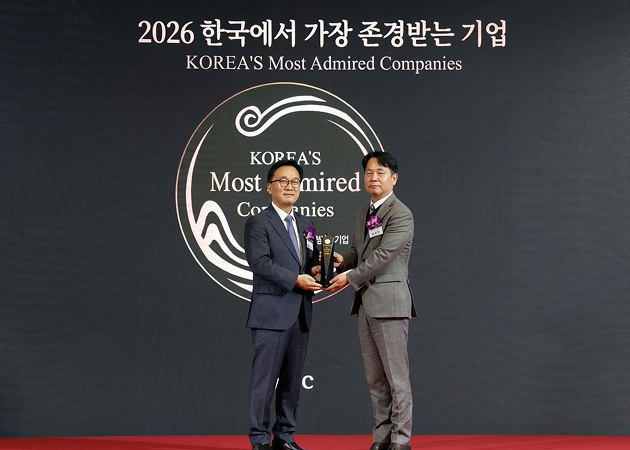
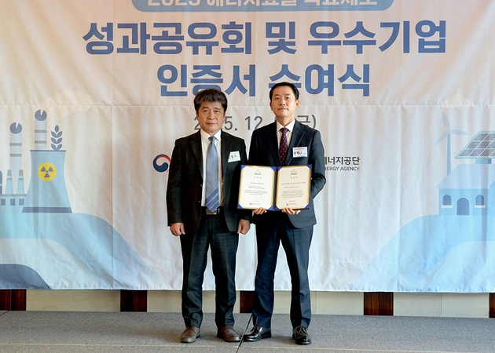

> 홍보센터 > 새소식
News새소식
한일시멘트의 소식을 가장 빠르게 전해드립니다
-

경영성과'한국에서 가장 존경받는 기업'
시멘트 산업부문 23년 연속 1위한국능률협회컨설팅이 발표한 2026년 '한국에서 가장 존경받는 기업' 시멘트 산업부문에서 한일시멘트가 23년 연속 1위에 선정됐습니다.
-

ESG경영에너지효율목표제도(KEEP30)
우수기업 인증, 2년 연속 획득지난 12월 5일 서울 중구 웨스틴 조선 서울 호텔에서 '에너지효율목표 제도(KEEP 30)' 우수기업 인증 수여식이 열렸습니다. 한일시멘트는 지난해 단양공장에 이어 올해 영월공장도 인증을 획득하며 2년 연속 우수기업으로 선정 됐습니다.
- 사회공헌 한일시멘트, 추석 앞두고 협력사 대금 조기 지급
- 기술개발 한일시멘트·한일산업, '내한콘크리트' 기술인증 획득
- 안전보건 영월공장, 온열질환 자동 경고 시스템 도입
- 특허 'AI 기반 이동식 사일로' 특허 획득
- 기술개발 '초유지 콘크리트' 기술성능 인증 획득
- 안전보건 노사·협력사 합동 '중대재해 예방 안전 세미나' 개최
- 경영성과 단양공장, AI 탑재 드론 투입
- 경영공시 한일시멘트 제8기 정기주주총회 개최
- 사회공헌 한일시멘트-탑스텐 리조트 동강시스타 업무협약
- 경영공시 단양공장, 임직원 자투리 통장으로 ‘사랑의 꾸러미’ 전달
-
경영성과
2025년 한국품질만족지수(KS-QEI) 3개 부문 1위 선정 —
포틀랜드시멘트 16년, 드라이모르타르 17년, 레디믹스트콘크리트 6년 연속 - 사회공헌 단양공장, 임직원 자투리 통장으로 후원품 전달
- 수상 '제2회 시멘트의 날' 기념식 참석, 임직원 정부 표창 수상